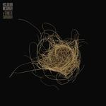

Music Reviews
-
Sturgill Simpson SOUND & FURY
Musically and thematically, Sturgill Simpson’s fourth record sounds and feels angry—from the fractured nation he lives in to the phoniness of the music industry he has to deal with.
Ethan Gordon reviews... -

Lana Del Rey Norman Fucking Rockwell!
Indulgent as anything she has ever released and pushing her grandiose visions to even greater heights, Norman Fucking Rockwell! is a majestic and captivating pop record that positions Lana Del Rey as a truly astonishing songwriter and storyteller. [Believe the Hype]
Jeremy Monroe reviews... -

The New Pornographers In the Morse Code of Brake Lights
A.C. Newman and company put forth yet another batch of solid songs—this time, focusing on the trials and tribulations of their neighbors to the south.
Mark Moody reviews... -

Vivian Girls Memory
Memory, Vivian Girls' return after five years, circles back to their formative period with a wiser, more complex vision of their past. [Believe the Hype]
Juan Edgardo Rodríguez reviews... -

Sandro Perri Soft Landing
Sandro Perri ascends to psychedelic bliss before inevitably plummeting to safety and living up to the title of his latest, Soft Landing.
Kirk Sever reviews... -
Pharmakon Devour
Margaret Chardiet has upped the ante even further than usual, crafting abrasive, boundary-pushing music with such deft that you won’t understand why you’ll want to keep returning to it.
Jackson Glassey reviews... -

Hiss Golden Messenger Terms of Surrender
Hiss Golden Messenger’s M.C. Taylor explores some dark corners on Terms Of Surrender, revealing the album’s most compelling moments.
Mark Moody reviews... -

Alex G House of Sugar
The Philadelphia singer-songwriter's latest balances gentle sentiment with darkness. It's just as bewildering as his last effort, Rocket, even if he's too much of a tunesmith to keep things too abstract.
Juan Edgardo Rodríguez reviews... -

Alex Cameron Miami Memory
The Australian singer-songwriter is still an entertaining narrator, and his knack for melodies continues to be strong. By stripping away the ickiest qualities of his music, he may have strengthened his appeal.
Ethan Gordon reviews... -

Jay Som Anak Ko
Melina Duterte's follow-up to Works sounds crisper and more structured, a result of extra people being present to provide input for creative decisionmaking—even if she remains the executive chef.
Jackson Glassey reviews...